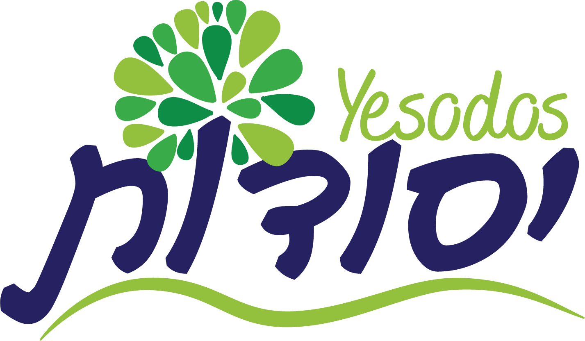

Individualized Learning Plans
Academic goals are tailored to the student and adjusted as skills develop.

Bais Rochel Special Education ProgramYesodos empowers girls in grades 1-8 with personalized academic and behavioral plans, differentiated instruction, and a caring environment where every student can feel understood, capable, and ready to grow.
Every student is seen
Teachers, goals, routines, and supports work together so growth feels steady and personal.
We learn how she learns best.
Instruction meets her needs with dignity.
Confidence builds through steady wins.
Our Mission
Yesodos supports girls whose learning needs call for more than ordinary classrooms can offer. In the positive, nurturing environment of Bais Rochel, each student is guided by individualized academic and behavioral plans that grow and change with her progress.
Parents entrust us with this important responsibility. Our caring and devoted staff and teachers empower each student to grow in her own unique way, helping her reach her potential with tools and skills for all aspects of life.
Serving girls in elementary and junior high grades.
Individualized plans that change with student progress.
Academic, behavioral, social, and emotional support.
Services
Each layer of support is designed to help a girl access learning, practice skills, and experience herself as capable.
Academic goals are tailored to the student and adjusted as skills develop.
Experienced teachers use methods that help students access learning with confidence.
Plans support classroom success, self-regulation, and steady personal growth.
Voices
"She is capable, creative, loving, and talented. She learns differently, and she deserves a path that sees all of her strengths."
Yesodos family perspective
"The goal is not only to help a student keep up. It is to give her tools, confidence, and a sense of belonging."
Program philosophy
Begin the Conversation
Reach out with your questions. We will help you understand the program, the supports available, and what a thoughtful next step could look like.